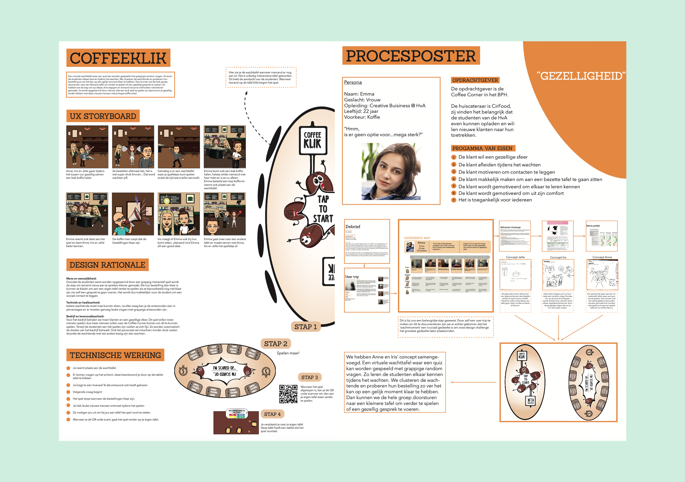

New Product Development
In dit eerstejaarsvak heb ik in teamverband met een design challenge als uitgangspunt een proces van divergeren en convergeren gevolgd om tot een uiteindelijk onderbouwd concept te komen. Een interactief digitaal product.
Cijfer: 7
Behaalde leerdoelen
- Het verkennen van een vraagtstuk met behulp van een experience map
- Het definiëren hiervan met bijvoorbeeld een reframed challenge en uiteindelijk in een Programma van Eisen opstellen
- Verschillende ideegeneraties toepassen
- Ideeën conceptualiseren in een duidelijk concept.
- Uiteindelijke product en proces kunnen presenteren